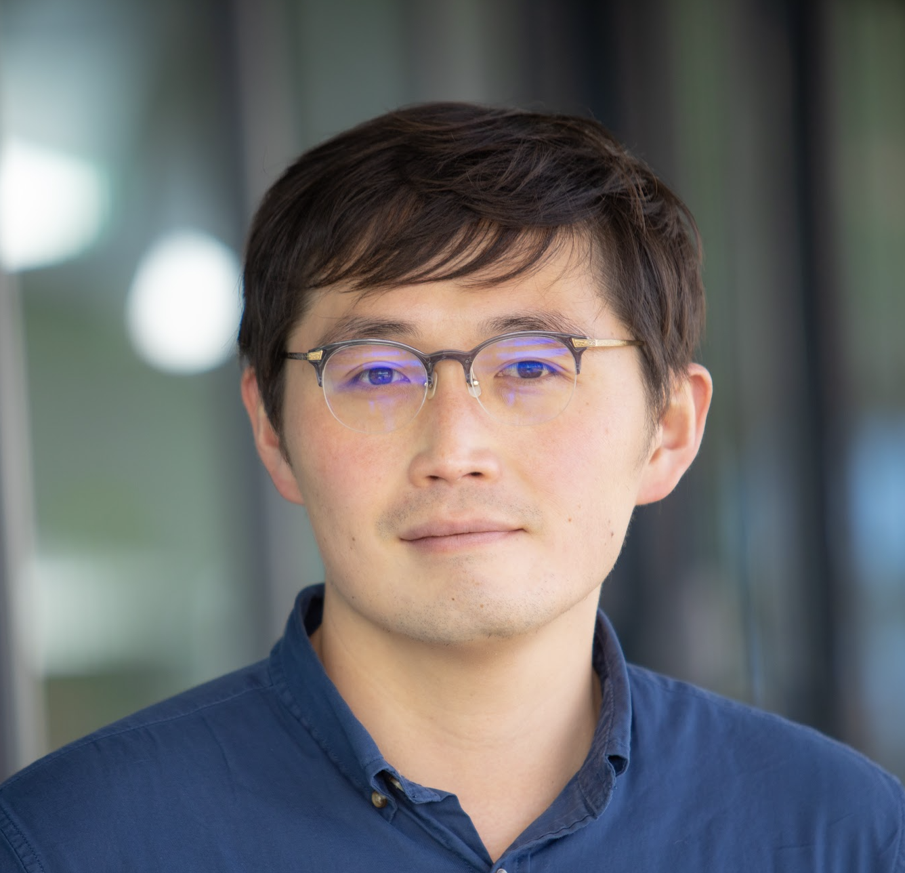

Assistant Professor,
School of Engineering & Applied Sciences, Harvard University
Research interests: Photonic integrated systems with quantum nonlinear optics and photonic inverse design for high-performance computing, communications, and sensing.
Identifiers: Web of Science Research ID
AAI-4141-2020,
ORCID
0000-0002-0587-3201
Education
2018 — Ph.D. in Electrical Engineering,
California Institute of Technology (Advisor:
Kerry Vahala)
2012 — M.S. in Electrical Engineering, California Institute of Technology
2010 — M.S. in Electrical Engineering, KAIST
2008 — B.A. in Electrical Engineering and Computer Science, KAIST
Academic Experience
2023–Present — Assistant Professor of Electrical Engineering, Harvard University
2021–2022 — Research Scientist, Ginzton Laboratory, Stanford University
2018–2021 — Postdoctoral Scholar in Electrical Engineering, Stanford University
Honors & Awards
2018.01 — Nano- and Quantum Science and Engineering Postdoc Fellowship, Stanford University
2010.07 — Atwood Graduate Fellowship, California Institute of Technology
Publication Metrics & Selected Publications
h-index > 30, Total citations > 5000, avg citations per journal article > 100 (source:
Google Scholar).
42 peer-reviewed journals (Nature: 1, Science: 4, Nature Photonics: 9, Nature Physics: 1)
Professional Services
2022 — Co-Editor of ACS Photonics, Special Issue on Optimized Photonics and Inverse Design
2019–2021 — Technical Program Committee, IEEE Photonics Conference
2014– — Regular reviewer for Nature, Science, Nature Photonics, Science Advances, Optica, ACS Photonics, etc.